蛋炒饭与白眼狼|老杨再谈朝鲜战争
长沙杨飞
今晚一个学生问我怎么看朝鲜战争。我的基本观点：三八线原是国际共同遵守的南北朝鲜分界线，1945年9月二战结束时由盟军统一确定，杜鲁门总统和斯大林协商一致，三八线以北的日军向苏军投降，三八线以南的向美军投降。战后南北朝鲜分别成立政府，划线而治。
1950年6月25日，金日成在斯大林和毛泽东的默许和支持下，撕毁盟军协议，越过三八线攻打汉城，由此引发了朝鲜战争。
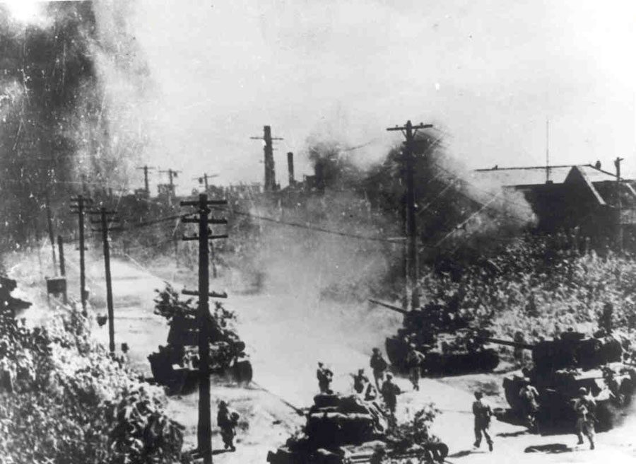
1950年6月，北朝鲜坦克攻入汉城
打群架追究责任，谁先动手的问题很重要。从现在多方公布的档案来看，金日成先动手无疑。北朝鲜教科书的描绘完全相反，这可以理解，以前卢沟桥事变，日本人还一直声称是中国军队先动手呢。
在朝鲜战争爆发前夕，北朝鲜军队无论是装备还是人数都占尽优势，还配有庞大的苏联军事顾问团（从总部到营团）。北朝鲜人民军以苏式T-34坦克开路，发动闪击作战，三天就拿下汉城，举世震惊。这速度和1939年闪击波兰有得一比。联合国安理会在开战第二天就通过决议，要求北朝鲜军队立即撤回三八线以北。当然，这决议对金日成来说就是一张废纸。
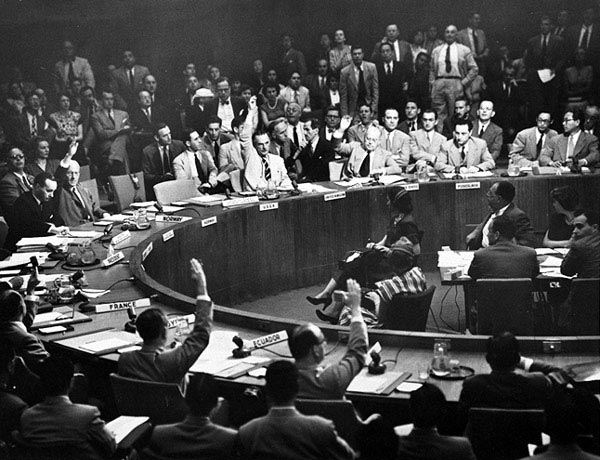
1950年6月27日，联合国安理会投票敦促北朝鲜军队撤出韩国，苏联代表故意缺席
北朝鲜军队一路高歌猛进，只差一点就要把南朝鲜李承晚政府赶到海里喂鱼。美国人此时大规模出手相助，1950年9月14日，麦克阿瑟率领联合国军（美军为主）在仁川登陆，断了金日成的退路，同时帮助南朝鲜从釜山的海滩上开始反攻。
两线夹击之下，北朝鲜兵败如山倒，人民军主力在洛东江至釜山一线被美韩联军包围。金日成本人逃回平壤，但美军并不罢休，于10月8日越过三八线继续追击，10月19日攻占平壤，直逼中朝边境的鸭绿江。
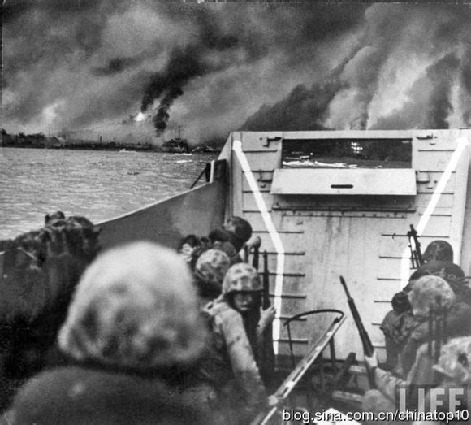
1950年9月14日，美军在仁川登陆
金日成眼看就要被赶进鸭绿江里喂鱼，此时他紧急向斯大林和毛泽东求援。老奸巨猾的斯大林卖米格飞机和盘子机枪答应得很爽快，但他就是不肯出兵（后来少量的空中掩护，苏联飞行员都穿中国军服）。
毛泽东刚开始也很犹豫，因为政治局多数人都不同意出兵，林彪干脆装病，粟裕甚至建议让金日成上山打游击。不知道毛泽东最后是怎么想的，他力排众议，决定直接出兵帮助金日成。
初始阶段中国人民志愿军进展较为顺利，美国佬被迫撤退。志愿军成功收复平壤，并于1950年12月31日越过三八线，1月4日再占汉城。美军反攻，3月15日又夺回汉城。双方展开拉锯战和阵地战，谁也吃不掉谁，只好坐下谈判。1953年7月27日最后签订停战协议。这三年多，朝鲜半岛被打得稀巴烂，三八线基本没有变化，世界上最愚蠢的战争也不过如此了。
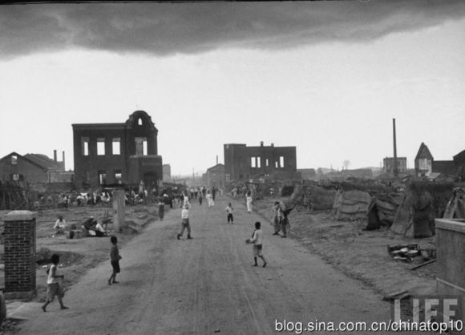
1951年6月，韩国大田市一片焦土，路边是难民搭建的临时窝棚。Joseph Scherschel拍摄。
纵观朝鲜战争，最大的输家应该是朝鲜人民。同胞互相残杀，家园变成焦土，直接伤亡数百万。南朝鲜人民还算好，有付出有收获，今天过上了幸福日子。北朝鲜人民最惨，死伤这么多，最后除了金胖子一家吃得很肥，很多居民至今连饭都吃不饱。
美国无疑也是输家之一。根据韩战纪念碑的数字，有36,570名美军士兵直接命丧战场，伤者达三十多万。美军在朝鲜这么拼命让人很不解。这场战争打得莫名其妙，鄙人觉得就算丢掉整个朝鲜也不会对美国的太平洋战略构成太大威胁，环太平洋圈最重要的始终是日本和台湾
。
后来我想，也许美国认为社会主义国家都是恐怖极权，应该严厉斗争无情打击，但也用不着亲自操刀吧？从1950年6月25日韩战爆发到9月14日仁川登陆，有将近三个月的时间，足够把那些日本退役军人重新武装起来，让他们到朝鲜去拼命。日本人那时候穷得没裤子，这也算救济穷人了。台湾的蒋介石也说了愿意派兵去朝鲜，为啥不遂他心愿呢，内战输了不服气，那就让他再去朝鲜肉搏。总而言之，我实在不能理解杜鲁门总统为啥一定要让美国大兵亲自去朝鲜拼命。美国佬还总是不长记性，朝鲜之后又跑去越南斗狠，吃了一个更大的哑巴亏，这里暂且不提。
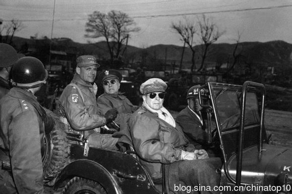
联合国军司令麦克阿瑟将军和李奇微中将
斯大林在朝鲜战争中的表现堪称猪一样的队友。1950年6月27日，联合国安理会投票敦促北朝鲜军队撤出韩国，苏联代表居然弃权。后来联合国安理会通过决议，向朝鲜半岛派驻联合国军，这明显的就是纵容美军合法地与中国开战，但苏联代表再次弃权。作为安理会常任理事国，斯大林手握一票否决权，难道他不明白？我只能推测斯大林想故意陷中国于不义，使得中国只能倒向苏联，充当与美国相斗的前线小弟。所以，要说朝鲜战争谁是最大赢家，毫无疑问是苏联。斯大林毫发无损，坐山观虎斗，成功牵制了最大的对手美国，使得中国只能认斯大林为老大哥。算经济账，苏联人赚得盆满钵满，大量二战退役和库存军火销售一空，中国直到1965年才把这些军火欠账最后还清。
对朝鲜战争的军火问题，1959年4月庐山会议前夕，前志愿军总司令彭德怀率军事代表团访问苏联和东欧时曾发牢骚说，“决不是我们要打（抗美援朝）这场战争。我们才站起来，几万吨钢，气还没喘过来哩。是迫不得已，我们才打了这场我们本来打不起，也不是很有把握的战争的！我们是用人头去抵挡人家的武器优势的。可是这个种下了无数中国人头的战场给我们留下的是一屁股的债。苏联人给了我们一些武器，大都是他们二战时用过的、剩下的，可价钱并不低，乘机捞了我们一把，在我们这个立足未稳的兄弟身上揩油，我们忍了，没有说话，为的是国际主义大家庭的团结。”
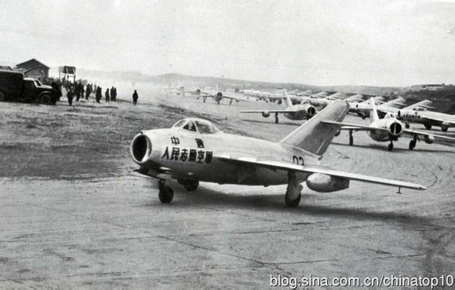
国际主义并没有什么不好，以前白求恩放着他们国内的穷人不救，不远万里跑到中国来救助八路军，我们都很感谢他。但是，国际主义也得有度，为了韩国人的利益，牺牲中国几十万人的生命，以及
上百亿本来应该用于国内建设的资金，这也太过了。这到底是爱国还是卖国？
中国官方对朝鲜战争一直颇为自豪，因为和世界第一军事强国打了个平手。美军和中国军队的伤亡数字可能有些争议，按照中国军事博物馆的数字，志愿军烈士共171,669名。我的看法是：三八线基本未动，盘面上是个平手，但死亡人数四五倍于敌军，如果说这是一个伟大胜利，此逻辑相当奇葩。
中国人民志愿军的机群，米格15是当时世界最先进的喷气式战斗机
有些军迷也许会说，小米加步枪打成这样算不错了。这个看法有误。志愿军的火炮和坦克相对劣势，但装备并不是全面落败。有了苏联这个军火贩子的支持，志愿军早已不是小米加步枪了，而是盘子机枪加米格飞机。在韩战中期，志愿军空军的米格15喷气式战机屡战屡胜，一度取得了部分空中优势（请搜关键词：米格走廊）。
这里公平地说一下，俄国人对韩战也有贡献。据不完全统计，前苏联空军在朝鲜战争中阵亡飞行员126人、士官133人，损失飞机335架。
要说明的是，志愿军的米格飞机并不是白得的，而是中国人民用白花花的银子从苏联买来的。全体中国人都为朝鲜战争掏了腰包。下图是豫剧艺术家常香玉全国巡演捐给志愿军的一架米格战机，当时被传为佳话。全中国都动员起来了，有钱出钱，有人出人。老百姓都以为美帝国主义即将进攻中国。
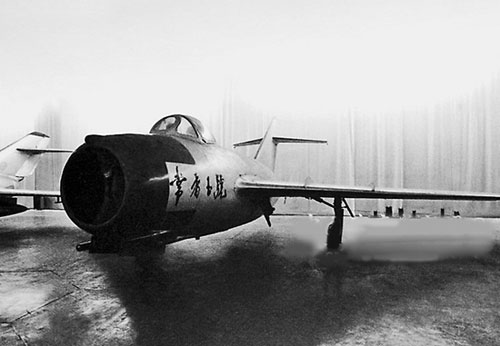
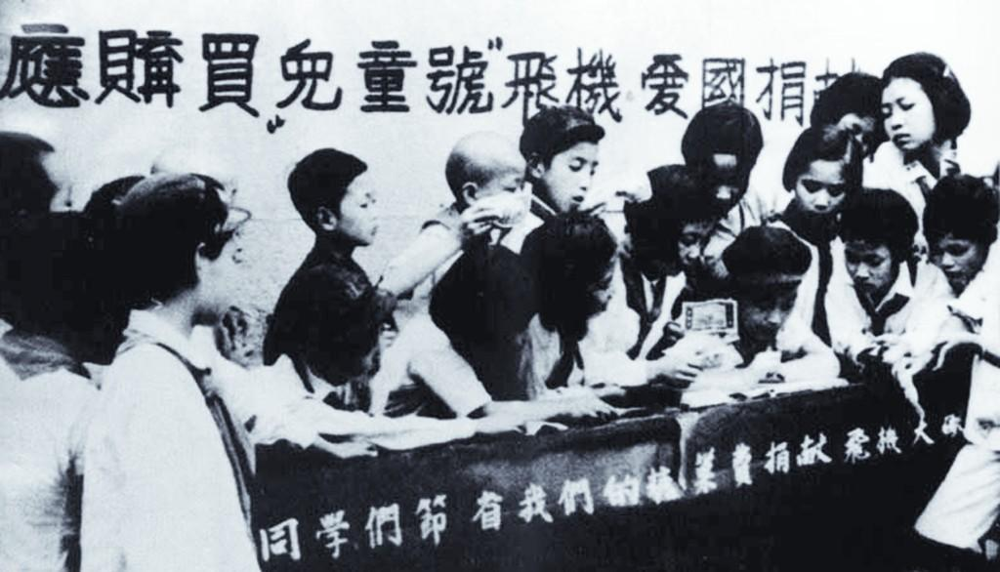
青岛少年儿童踊跃捐款买战斗机
最后的问题：这场让中国人民付出沉重代价的战争到底值得不？“抗美援朝，保家卫国”的口号人人皆知，意思就是说中国面临美国入侵，所以才出兵的。但是从现在解密的档案来看，美国根本就没有进攻和占领中国的计划。有人说麦克阿瑟曾有此意，但是这个说法从来没有任何实证。即便麦帅有意，杜鲁门总统也绝不会同意。并且，要美国参众两院通过进攻中国本土的决议，其可能性几乎为零，谁都知道这将意味着新的世界大战（参见中苏友好互助同盟条约）。1951年4月麦克阿瑟被 突然撤职，原因之一就是此君向来大嘴巴，宣称要采取一切必要手段（暗示核武器），还擅自访问台湾，屡屡让杜鲁门总统难堪。
退一万步讲，即便美国那时候有意攻打中国，以美军的海空军实力，它想打谁就打谁，可以在地球上任何一个地方直接登陆。1944年欧洲的诺曼底登陆以及韩战的仁川登陆就是明证。美国佬吃饱了撑的要先打北朝鲜，然后再进入中国？
美国是铁了心不想与中国和苏联开战的，为此甚至不惜隐瞒军情。美国空军早在1950年末就断定苏军参战了，监听的无线电里经常有俄语对话，美军飞行员甚至透过机窗看到了白人的面孔。但美国
当时对苏联参战只字不提，因为美国总统和斯大林都一样，不愿引发第三次世界大战。艾森豪威尔的高级助手尼茨普曾说，“如果我们公布事实，公众就会指望我们对此采取行动，而我们在这场战争中最不愿意做的事就是与苏联的冲突扩大到更为严重的地步。”
中国一直指责美军蓄意轰炸中国东北。对这个问题我是这么看的，为了切断金日成的后勤支援，美军多次轰炸鸭绿江大桥，紧邻鸭绿江的中国丹东掉下过几颗美国炸弹，这是可能的。那时候
还没有精确制导炸弹。但若说美国有组织地轰炸中国领土，并准备进攻中国，你相信不？前个月，中国境内还掉下过几颗缅甸空军的炸弹呢，有人相信缅甸准备进攻中国了吗？
这里有图为证，虽然美军反复轰炸鸭绿江大桥，但飞行员也都有意避开中国一侧。那些说美军蓄意轰炸中国东北的人，请出示证据。
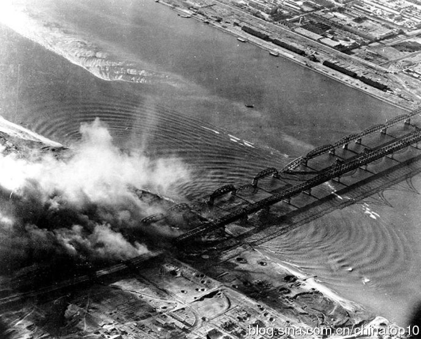
1950年10月，美军空袭炸毁朝鲜一侧的鸭绿江大桥
根据俄罗斯解密的韩战档案，中国在出兵朝鲜前还多次和斯大林讨价还价，说如果苏联不提供空中支援和武器装备，中国就不出兵。要真是遭到外国入侵，还能坐在那里讨价还价？大刀长矛也得上啊。
中国出兵朝鲜，基本是被金日成这个老贼害的。补充说明一下，从1949年到1950年初，斯大林一直都不同意武力统一朝鲜，谁都不愿意被一个小国的内战拖下水。金日成一哭二闹三上吊，多次密电请示，最后亲自跑到莫斯科求情，才得到了斯大林的支持。
斯大林答应了金日成，但是又告诉他：你要打南朝鲜可以，请在开战之前和毛泽东商量一下。这一招实在是高，既给了毛泽东面子，又推掉了未来的责任（万一打不过，别来找我，请找毛泽东）。所以在攻打南朝鲜的前夕，1950年5月13日，金日成飞往北京密会毛泽东。有了斯大林的支持，那时的金日成豪气冲天，拍着胸脯说不需中国出兵，他有把握速战速决。没想到几个月之后就被美国人打残了，赶紧又向中国哭丧要求支援。
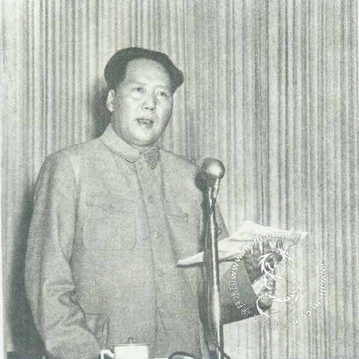
朝鲜战争爆发的第三天，1950年6月28日，毛泽东发表讲话，号召全国和全世界人民团结起来，做好充分准备，打败美帝国主义的任何挑衅
顺便说一句，在志愿军进入朝鲜之前，中国也不是完全没出兵。我们都知道毛主席在1949年底把解放军三个整编师近五万部队（四野第164师、166师和156师）连人带马无偿送给金日成的事。这三个师改编为朝鲜人民军，成为了攻打南朝鲜的主力之一。但这并不能说明毛主席那时候就支持金日成攻打南朝鲜。这三个师的官兵很多是客居东北的朝鲜族人，三年内战打完了，解放军本来就需要裁员。在金日成的再三请求下，毛主席就送了个顺水人情。这也是他的一贯作风，国内再吃紧，对外援助也必须慷慨大方。
中国出兵朝鲜还有一个后果，那就是攻打台湾的计划完全泡汤（美国彻底与中国翻脸，美军第七舰队开进台湾海峡）。蒋介石高兴得夜不能眠，直呼“天父圣灵”，他终于坐稳了台湾岛。可以说，朝鲜战争帮助了三个独裁者：北朝鲜的金日成、南朝鲜的李承晚和台湾的蒋介石。
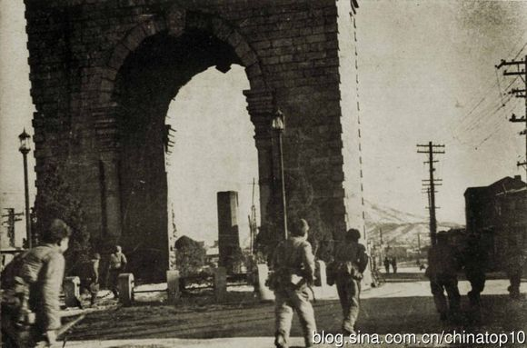
1951年1月，中国军队在汉城独立门附近搜索前进
在中国还有一个流行的说法，说这场战争保住了北朝鲜，为中国争取了一个重要的缓冲区。这实在难以让人信服。领土没有遭到入侵，按照国际准则，是没有理由出兵的。如果每个国家都以需要缓冲区为名，派军队进入
外国，那就会天下大乱，战火永无停息。所以，虽然中国派出了百万大军，但从来没有宣战，一直对外称志愿军。当然，在有些情况下也可以直接参战，那就是两个国家互为同盟。但是中国和北朝鲜当时并没有盟约（中朝友好互助条约是1961年才签订的），从法理上来看，中国那时完全没有义务出兵。
长期以来，美国被中国官方称之为韩战的“侵略者”，但国际社会并不这么看。早在1951年2月1日，联合国大会就以44票赞成、7票反对、8票弃权通过第498号决议，认定中华人民共和国介入朝鲜是侵略行为，呼吁中华人民共和国停止对抗联合国军，退出朝鲜半岛。这个决议被中国外交部斥之为一派胡言。1951年的中国大陆并不是联合国成员国，
不理这个决议也是可以理解的。
很多人都很自豪，说朝鲜战争大大提高了中国的国际地位。但实际情况是，一场韩战下来，中国被西方社会孤立了二十多年。与联合国维和部队开战，还提高国际地位，这是什么逻辑？美国出兵朝鲜是联合国授权的，有16个国家派了军队参加，此外还有41个国家提供军事装备和物资。攻击联合国维和部队，在今天应该只有非洲部落的土匪才干这事。
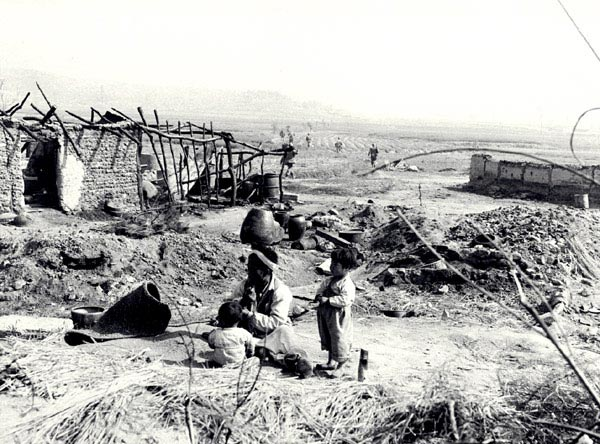
1950年秋天，北朝鲜一个被战火摧毁的村庄，远处是美军第一骑兵师的士兵。
总而言之，虽然中国高唱“雄赳赳气昂昂，跨过鸭绿江”，但明眼人都知道中国出兵朝鲜实在是名不正言不顺。前面说过，中央政治局那时候大多数人都不同意出兵朝鲜，林彪干脆装病，粟裕建议让金日成上山打游击。现在看来，老将军们的看法无疑是正确的。从本质上来说，南北朝鲜打内战，那是他们自己的事，中国没有出兵的理由。为什么就只能让北朝鲜打南朝鲜，让南朝鲜统一朝鲜半岛就不行吗？后来美国人进来帮南朝鲜，这也是金日成自己惹的祸，凭什么要中国人去为他拼命？
为了保朝鲜，中国付出了极大的代价，精锐部队伤亡数十万。从1950年到1953年，朝鲜战争支出占中国年度财政预算的34-43%（取决于年份）。尽管百废待兴，经济极不发达，但是中国那几年的军费开支位列世界第四，仅次于美国、苏联和英国。到战争结束时，中国还欠苏联13亿美元外债。
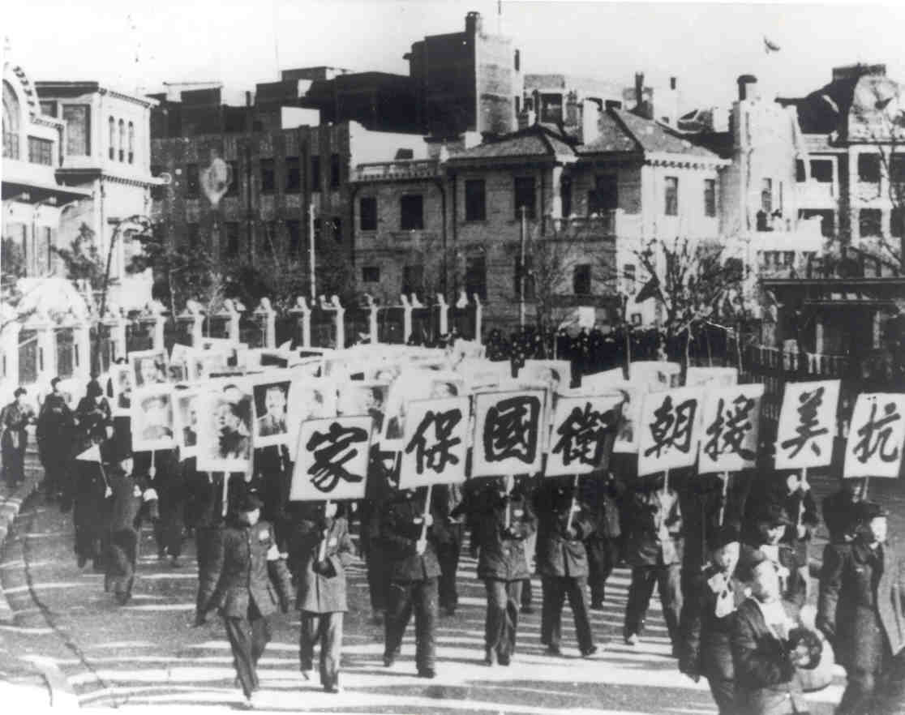
1950年的街头游行，抗美援朝，保家卫国
纵观朝鲜战争，中国上上下下耗费了巨大的人力、物力和财力，没得到一点好处。军火贩子斯大林兴高采烈地数着钞票，中国人民却在朝鲜流血流汗，回头还说自己取得了重大胜利。这真是被人卖了还帮人数钱，先是被军事冒险主义者金日成骗了，然后又被老奸巨猾的斯大林卖了。
最让人没想到的是，中国付出了惨重代价，扶持的金日成却是一个忘恩负义的家伙。1958年志愿军撤走之后，金日成立即在北朝鲜肃清“延安派”，军队里和北京有关系的军官遭到清洗和杀害（包括那三个送给金日成的原东北四野解放军师）。在文革的1967年，甚至连志愿军在朝鲜的烈士陵园都遭捣毁（后来修复）。现在北朝鲜的纪念馆里很难看到中国人民志愿军的史料。北朝鲜的教科书也都是描绘金日成指挥朝鲜人民军神一样地打败了美军，对中国人民志愿军只是一笔带过。
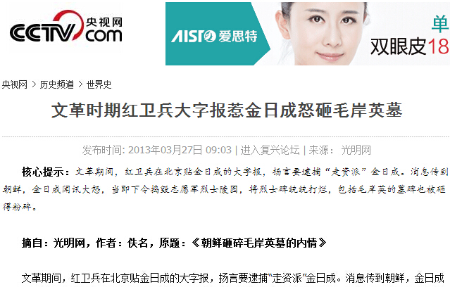
志愿军烈士陵园被毁的报导截图
金胖子家族血洗反对派之后，在北朝鲜搞世袭，人民吃不饱饭也不顾，拿着中国的援助不停地在中国家门口制造麻烦，动作越来越大，一直搞到核爆炸，还美其名曰开发宇宙。中国现在只能自认倒霉，本来想养一条看门狗，没想到养了一条白眼狼。早知这样，当初就应该让美国佬把金胖子灭了，与南朝鲜为邻要省心多了。
北朝鲜现在这个蛮横的样，其实也来自我们的错误决策。我私下认为，1958年志愿军全部撤出朝鲜是一个错误的决定。只要美军还驻扎在南朝鲜，中国的志愿军就有理由驻扎在北朝鲜。要知道板门店协议只是一个简单的停战书，理论上来说朝鲜战争并没有正式结束。中国如果一直保有几万精锐部队在北朝鲜，金家后来绝不敢这么张狂。
在中国人民志愿军牺牲者名单里，最引人注目的是毛主席的长子毛岸英。他是志愿军总司令彭德怀的机要秘书兼俄语翻译。按理说志愿军总部相对安全，没想到天有不测风云，1950年11月25日上午十点左右，他意外死于一架敌军轰炸机投下的汽油弹。根据杨迪1998年的回忆录《在志愿军司令部的岁月》，毛岸英是因为炒一碗蛋炒饭而不幸遇难。而按照纪律，在时有空袭的白天是严禁烟火的。
杨迪同志当时是志愿军作战处副处长，他目睹了毛岸英遇难的全过程，其回忆原文是这么写，“在我路过彭总办公室时，看到烟筒冒烟，立即跑进里面去看看，房里还有三个人正在用鸡蛋炒米饭吃。这些鸡蛋是前一天黄昏，我看到朝鲜人民军最高司令部派到志愿军任副政治委员的朴一禹次帅（朝鲜金日成是元帅，下有三位次帅）给彭总送来一小筐鸡蛋（约10多个）。这在当时的朝鲜是极难得的，当时彭总已吃过晚饭，还没来得及吃。三人中我只认识成普同志，那两位同志我只知道一位是彭总的俄文翻译，一位是才从西北调来的参谋，他们的姓名我不知道。我问成普：“老成，你们怎么敢用送给彭总的鸡蛋炒饭吃呢？赶快把火弄灭。”成普说：“我怎么敢呀，是那位翻译同志在炒饭。”
毛岸英在志愿军一直用的是化名，只有极少数人知道他的真实身份。当天杨迪和司令部其他人员都不知道牺牲的乃是毛泽东的儿子。根据美方的资料，当天投弹者是南非空军的波兰裔飞行员G. B. Lipawsky上尉。这次空袭是一个偶然的巧合，也是毛家天翻地覆的大事。唯一神智正常的儿子就这么死了，家里的香火从此了断，毛泽东要是早知如此，不知他还会力排众议出兵朝鲜不？
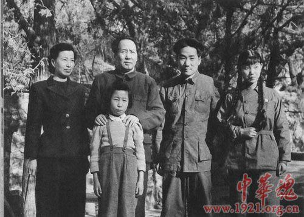
1949年4月，毛泽东与刘松林、毛岸英、李讷、江青在香山
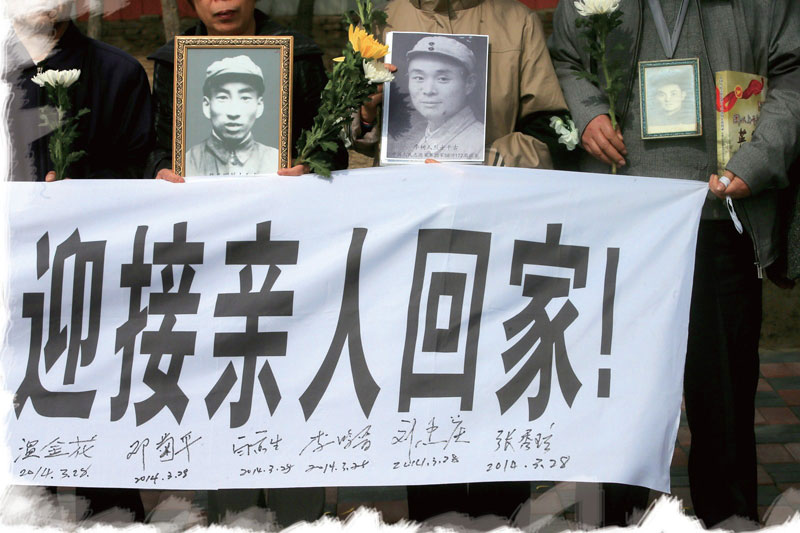
2014年3月，重庆籍志愿军阵亡者骨灰回到中国
不啰嗦了，朝鲜战争简单总结，那就是毛泽东出人，斯大林出枪，帮金日成从鸭绿江里爬了上来，在北朝鲜坐稳了江山，并一直延续到他的儿子金正日和孙子金正恩，到今天金胖子还时不时地在中国边境放几个大炮仗刷存在感，提醒北京开仓放粮。中国只好自认倒霉。
如果一定要说朝鲜战争对中国人民的好处，那就是一碗蛋炒饭让毛家长子永远留在了朝鲜，否则现在的中国应该还继续姓毛，就像北朝鲜依然姓金一样。
此乃个人简单看法，请诸位大侠扔砖。
老杨，
2015/4/20初稿，2021/10/5改于长沙
关注老杨
杨飞作品集：www.midphoto.com
微信：yangfei789288
微信公众号：老杨书吧
新浪微博@长沙杨飞
推特Twitter@feiyang17
Facebook：yangfei999999@hotmail.com